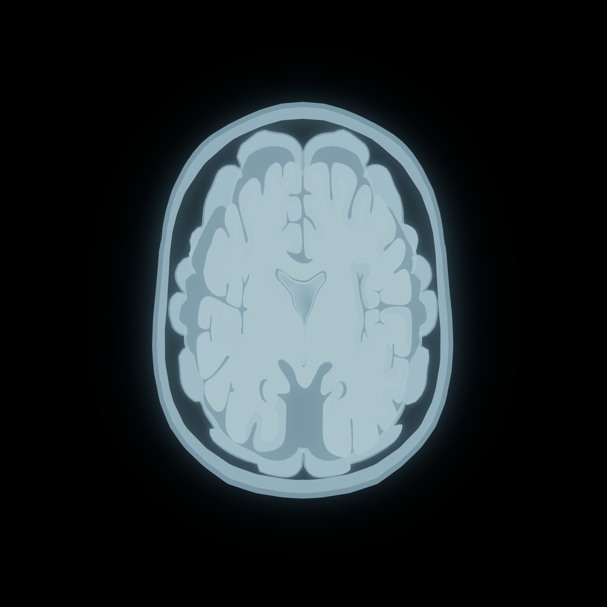
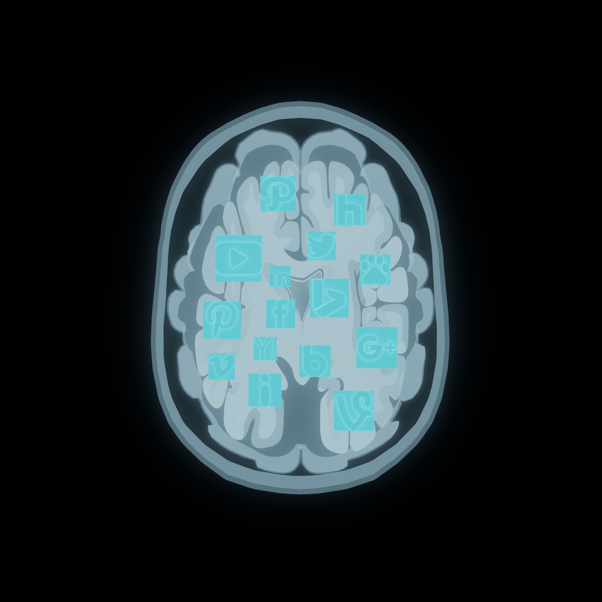
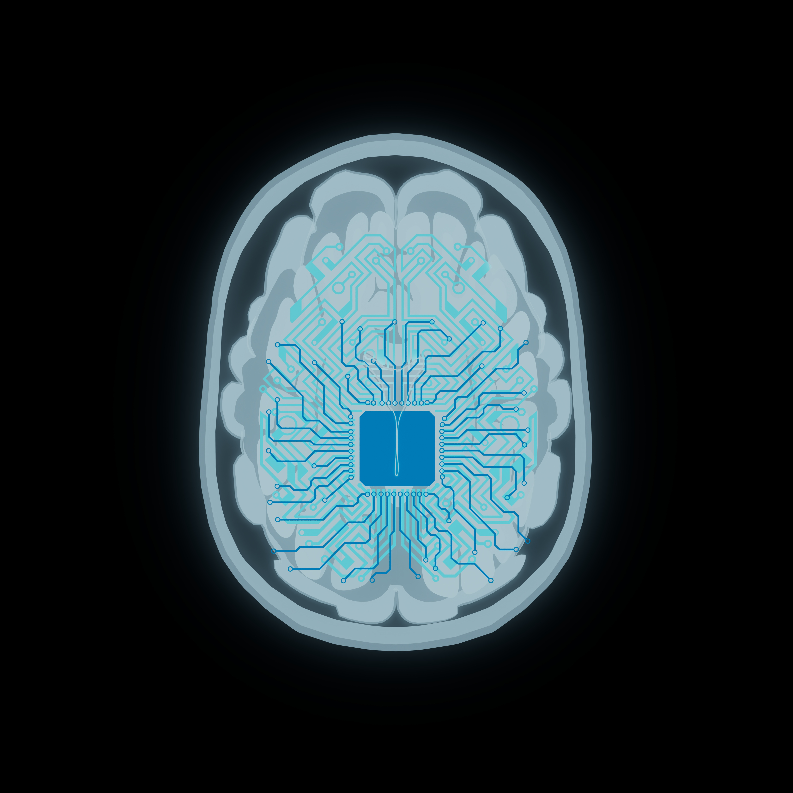
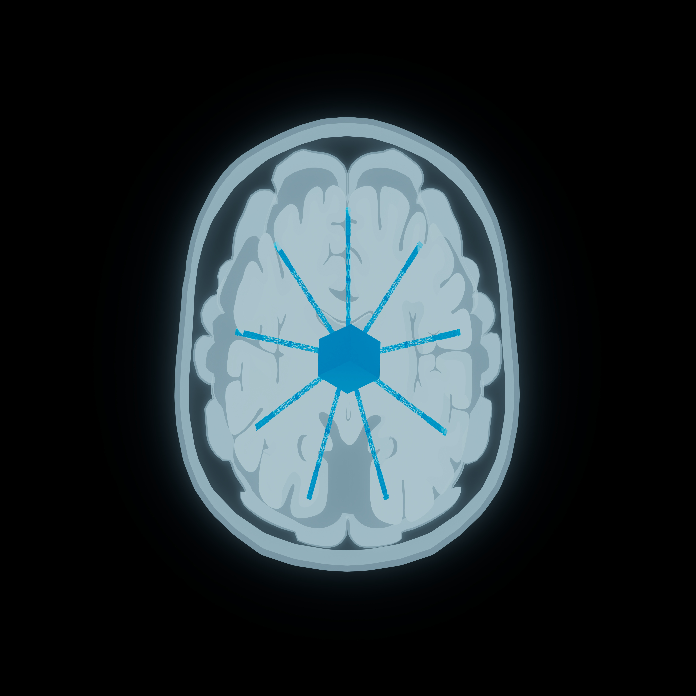

SUBJECT ID: USER_001
SYSTEM STATUS: NORMAL[BREACH DETECTED]
SCAN DEPTH: -000 mm
LAYER TYPE: BIO_SURFACE
DATA INTEGRITY: 100%
> SCANNING DIGITAL EPIDERMIS... Mapping physical identity to virtual ID to construct an initial digital mirror."
data-risk="LOW">
> ACCESSING NEURAL PROBES (APP CLUSTERS)... Extracting behavioral patterns and geolocation data via seamless passive collection."
data-risk="MODERATE">
> UPLOADING TO OFFSHORE SERVERS... Fragmented privacy is reconstructed in the cloud into a permanent, searchable profile."
data-risk="HIGH">
> ASSET TRANSFER COMPLETE... Personal data assimilated by corporate entities. Individual will converted into commercial capital."
data-risk="CRITICAL">
PHASE I: DIGITAL BIOPSY
>> SCANNING DIGITAL EPIDERMIS... Mapping physical identity to virtual ID to construct an initial digital mirror.